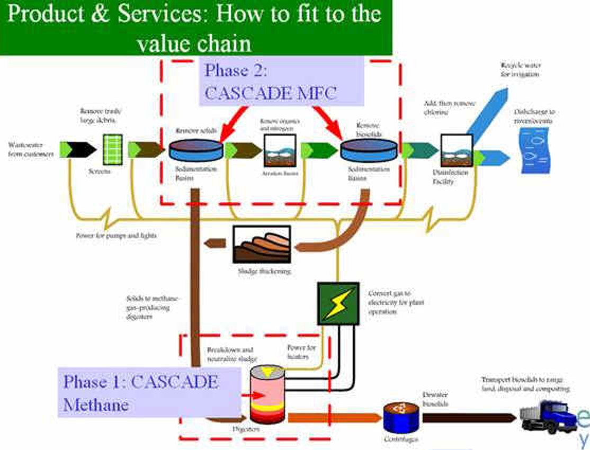

This provides an in-depth overview of Cascade Clean Energy. Feel free to reach out to us.
Here at CASCADE, our core competency and primary point of differentiation is the ability to implement water and wastewater treatment and alternative energy technology solutions in an integrative manner. Initially, our focus will be on three main market sectors: alternative energy (generated by biomass & fuel cells), and water purification and wastewater treatment. Integration of technologies through produces a “system of systems” as a unique product in and of itself.

Concerning water and wastewater treatment, our partners have experience and knowledge in water and wastewater treatment applications. Waste treatment is a mature industry where many things have been done the same way for almost a hundred years. Thus, our greatest advantage with this product line is our knowledge and utilization of those cutting edge technologies that reduce costs of such projects in the areas of initial capital outlay, ongoing O&M and energy use and/or production. Our wastewater treatment program, called Waste Water Works (WWW), is divided into two phases. Phase one involves the CASCADE Methane Bioreactor, and phase two involves the CASCADE Microbial Fuel Cell. Both products will be discussed in sections below.
Concerning alternative energy, CASCADE is establishing working alliance with fuel cell and micro-turbine manufacturers to promote waste to energy power production. These systems will incorporate products as a supplement to harness process methane waste gas in the wastewater treatment plants for conversion to electrical energy. Utilizing this type system for producing electricity is typically 20% more efficient and reliable than a traditional reciprocating engine.
We are also working on a proof of concept pilot plant to develop a microbial fuel cell (MFC). The MFC technology has many applications in harvesting energy directly from a waste stream.
Biofuel awareness has increased markedly in the last five years, with ethanol attracting the most attention. However, processing corn into ethanol requires a great deal of both seed energy and water and has chosen to focus on other ethanol production methods as well as the promise of methane and hydrogen produced from waste products. We are uniquely positioned to pursue these existing and emergent technologies due to our associations in the industry.
Below is a listing of our main technologies right now.
We use an In Silico screening platform called the Computer-Assisted Strain Construction and Development Engineering (CASCADE) to systematically select organisms in respect to different wastewaters. By applying CASCADE, our product is able to link massive genetic and chemical fingerprints in the metabolic and energy-generating biological pathways to assess an organism’s metabolic capability to digest the organic matters and generate electricity, and at the same time to clean the wastewater. This makes it possible to customize and find efficient microbes (or even to discover novel microorganisms) for electricity generation and biochemical oxygen demand (BOD) reduction based on the initial content of a wastewater. This drastically increases the conversion rates of both hydrogen and electricity productions. CASCADE selects the optimal bacteria consortia to maximize the yields of the desired renewable energy products.
The CASCADE system was developed in January 2007. We are currently running four real-life tests of selection microorganisms for their metabolic advantages. The CASCADE technology is undergoing validation at ARL/ARO for MFC, University of Wyoming for spider silk production and Georgetown University for pathogen detection. For a given organism, a given content of a bio-waste input and a desired clean energy output, we first compile a profile for that organism. For example, data and text that describes a biological system as a whole can be collected including information on gene similarity among organisms, gene functions, metabolic functions, biological pathways and pathway substrates/products involving energy-generation. This is done for the organisms in various public and private databases. We then apply a network of Knowledge Pattern Search to group the organism population into characteristic groups based on the profiles compiled previously. One or a group of microorganisms are selected based on a profile match score. The score is calculated for each organism from a defined metabolic efficiency measure for the organism. A metabolic efficiency measure is a prediction of a desired capability in real life based on an organism’s profile.
Methane in the form of biogas has long been seen as a byproduct of the digestion process waste treatment systems in general and has frequently been flared as a means of disposal. Use of digestion as a means for waste treatment in the meat and dairy industries is still limited but gaining popularity – most of the resulting waste is washed into lagoons or used as compost/fertilizer, releasing any produced biogas . Many municipal wastewater treatment plants use some of their digester produced biogas as a heat source to maintain digester temperatures in mesothermic and philiothermic systems. Only recently has biogas been gaining attention as a possible energy source for generating electricity.
The CASCADE system provides the potential to drastically increase the energy yield and nutrient reduction from any nutrient rich waste stream by selecting methanogenic, hydrogenic and electrogenic bacteria present in the given waste stream, culturing them and injecting the culture into the waste stream. The beauty of this idea is that it can be retrofitted quickly and relatively inexpensively to most existing digestion systems. Every waste stream is unique, therefore the CASCADE solution for each system will be custom tailored to the operating parameters and biological characteristics involved. Basic elements such as culture storage and metered pumping can be somewhat standardized. The majority of existing systems have some means of capturing and handling methane based biogas and these can be reconfigured to handle increased production. Gas treatment systems may have to be installed to strip the biogases of moisture, siloxanes, hydrogen sulfide and other undesirable elements. Ultimate use of the gas as an energy source will require a means to store the treated gas and convert it to heat or electricity on demand.
As opposed to the aerobic systems used in most WWTF today, CASCADE Methane utilizes an anaerobic digestion process for organic material decomposition without oxygen. The dark fermentation process of anaerobic respiration produces hydrogen and methane (Ch3) and other greenhouse gases such as carbon dioxide (CO2). Anaerobic systems require much less electricity than the aerobic system. The annual power usage of a single residential system is in the range of 50 to 100 kWh (7% of an aerobic system) and requires no air supply.
CASCADE is also working to identify digester designs that give the CASCADE selected cultures the best conditions for producing maximum energy and optimal treatment levels at the fastest rate. Our lab in Nanjing will provide us with the facilities to test, modify and retest the most promising technologies so that we can make the most of any nutrient rich waste stream.
Microbial Fuel Cell (MFC) technology utilizes bacteria to produce electricity in what is referred to as the MFCs are a novel method of renewable energy recovery; electricity can be made from any biodegradable material, even wastewater, without needing to add special chemicals. Historically, MFCs did not produce electricity economically.
Applying CASCADE makes it possible to customize and find efficient microbes for electricity generation and BOD reduction based on the content of a wastewater. For example, we compiled number of substrates consumed and products produced in the reactions involved in a fermentation process which uses a biowaste input as the feeding substrates. Using CASCADE, we include the combined information of substrates (In), products (Out), metabolic pathways (Pathway) and interested properties (Target) such as electrogenic results in a list of microorganisms that are likely taking cellulose or actetate as a substrate reflecting in the various wastewater contents. It provides a fast path to find the microorganisms that are able to digest diversified waste contents and recover clean electricity.
Microbiology is simply the study of microscopic organisms, which includes unicellular and multicellular organisms. There are many hundreds of thousands of microorganisms that surround our day to day lives, and the great majority of microorganisms can benefit humans by recycling the most important resources we need to live. That being said, there are many other microorganisms that can harm humans if not handled carefully.
Microorganisms are used everywhere: from pickling food found in the supermarket to making perfumes smell better, it would be impossible to imagine modern day conveniences being what they are without the help of our many little friends. Here at CASCADE, we are simply trying to find new revolutionary ways to use microorganisms for the better. We try our best to use our knowledge of microbiology with data science to find the best microorganisms suited for recycling waste and generating clean and renewable sources of energy.
Data mining is the process of trying to find and understand patterns from large sets of data. Data mining is a trending topic in computer science, and combines machine learning, statistics, artificial intelligence, and databases altogether into a behemoth of an interdisciplinary subject. Here at CASCADE, we use data mining on our large database of microorganisms to find which ones are most optimal for the clean energy generating process. Our data mining procedure originally comes from our parent company, Quantum Intelligence Inc., and we are using Quantum Intelligence’s system in a new way.
Bioinformatics is the study of analyzing and processing biological data with the help of computers. Because we have an extensive amount of data concerning microorganisms, we actually use bioinformatics every day to help us pinpoint the essential microorganisms we need for our projects.
Wastewater (sewage) consists of liquid and solid waste products collected by drains and pipes called sewers. Wastewater contains microorganisms, some of which are pathogenic to humans. The proper treatment of wastewater prevents the dispersal of these pathogenic microbes, such as coliform bacteria, staphylococci, fungi, protozoa, and helminthic larvae. Most wastewater treatment plants incorporate three broad levels of processing: physical or primary treatment, biological or secondary treatment, and chemical or tertiary treatment.
Subterranean conduits, called sewers, bring wastewater to the grit chamber in the treatment facility for preliminary physical processing. The wastewater passes through a bar screen which traps large debris. Insoluble material passing the screen, such as sand, eggshells, and gravel settles in the grit chamber and is moved out of the chamber by a rotating auger. This insoluble waste is often transferred to a drying field.
Ninety percent of the wastewater from the grit chamber flows into the primary clarifier, a type of settling tank. Here light, insoluble waste collects on the surface of the wastewater. This scum is drawn into v-notched collectors, called weirs, located around the outer, upper edge of the clarifier. The heavier solids (sludge) settle and collect at the bottom of the clarifier. Both scum and sludge are transferred to the anaerobic digester. The wastewater is transferred to aerobic biological processing units.
Microorganisms are the principal actors in biologic processing. The anaerobic digester is a closed tank in which anaerobic bacteria resident in the sludge digest or break down the organic matter present (dead organisms, insoluble vegetative matter, and so on). This fermentation process goes on for weeks. The end products of fermentation are converted by anaerobic bacteria to methane gas (Ch3) which collects at the top of the digester. This gas can be recovered and used by cogeneration units at the treatment plant to produce electricity. The unconverted indigestible sludge is pumped to drying fields, developed as a fertilizer, or put in landfills or on specified areas of ocean floors.
Aerobic digestion of organic matter occurs in the trickling filter. Here the wastewater is sprayed over fist-sized stones (called media) on which a microbial (zoogleal) film of aerobic bacteria and fungi develops. Aerated wastewater passes down through the rocks, creating a virtual food chain on the media. Bacteria and fungi feed on particulate organic matter; these small microorganisms are consumed by larger microorganisms (protozoa). As the amount of available nutrients decrease, the number of microorganisms decreases.
In technical terms, there is a reduction of biological loading and biochemical oxygen demand (BOD). In time, the remaining organic matter in the wastewater is oxidized and mineralized, forming ammonia, nitrate, phosphate, sulfate, and carbon dioxide. The oxidation of wastewater may also occur in large ponds.
Another form of aerobic digestion of organic matter in the wastewater is the activated sludge system. Here wastewater, containing numerous microorganisms, is discharged into a tank in which air diffuses up from the bottom. The aerated, flowing water encourages the growth and reproduction of bacteria which necessarily consume the available organic matter. In effect, the activated sludge system speeds up the process that ultimately reduces the biological loading. Some of the wastewater cycles back to the tank (return activated sludge or RAS); eventually the wastewater is piped off to the secondary clarifier by way of a mixer.
Chemical processing of wastewater begins with the addition of chemicals, such as polymers, coagulants, and flocculents to the waste water in a rapid mixer tank. These chemicals bind the microorganisms in the wastewater, forming insoluble clumps (floc) in the secondary clarifier. The floc settles to the floor of the tank, accumulating as sludge. The sludge in the secondary clarifier may be transferred to an anaerobic digester or it may be transferred to drying fields
Wastewater is transferred from the secondary clarifier to the chlorine contact basin. Here sodium hypochlorite or chlorine gas is injected into the flowing wastewater for disinfection. Filtration of the wastewater is sometimes used as a tertiary treatment method.
If the treated effluent is to be discharged into a lake, river or ocean, it must be dechlorinated with sulfur dioxide or sodium bisulfite. If the effluent is to be used for reclamation (irrigation), the chlorine is usually dissipated during conduction of the water in the miles of transmission pipes from the treatment plant to the reclamation site.